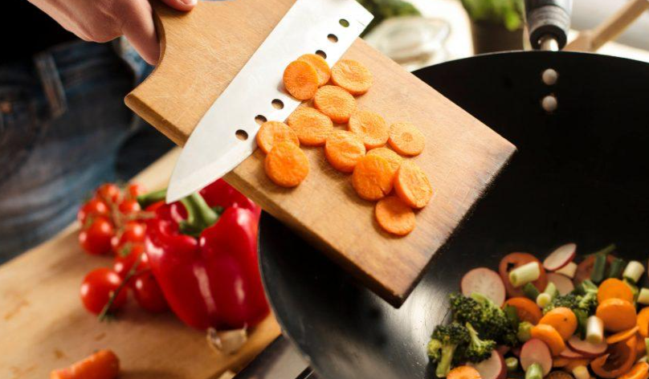

Escolha receitas fáceis: comece com uma receita menos elaborada e tente fazer coisas praticas do dia a dia: fritar um ovo, um macarrão com molho de tomate, arroz, etc; Siga as receitas: ter o 'modo de fazer' em mãos vai te ajudar muito nas primeiras aventuras culinárias; Prepare pratos que você goste: nada de preparar algo por achar que vai ser fácil e ai não vai errar ! Melhor fazer algo que você queira muito tentar e, assim, fazer sua refeição com amor, dedicação e entusiasmo; Verifique a lista de ingredientes: veja sempre se você possui todos os ingredientes da receita, para um iniciante pode ser difícil encontrar substituições logo de cara; Salgado ou doce? O que você gosta mais ? Eu, particularmente, gosto da cozinha salgada e tenho medos intimidade em fazer doces e, por isso, arrisco mais e tenho mais prazer em fazer comida salgada, você pode escolher começar pelo que você prefere e ai ir evoluindo entre as duas opções; Explore os cheiros e gostos: teste novos temperos! Se tem uma coisa que pode te ajudar no preparo de seus pratos é descobrir a gama de possibilidades que existem; Conheça os utensílios de cozinha: saber o que e para que serve cada coisa e cada panela vai te ajudar bastante na hora de cozinhar e facilitar sua vida cotidiana.
